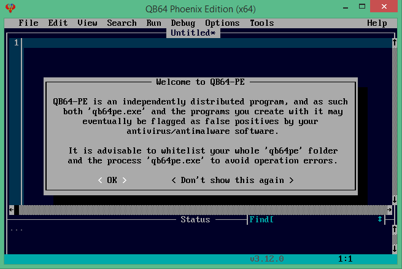
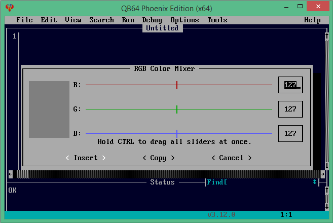

QB64pe IDE tour
QB64pe includes an integrated developer environment (IDE) where you type in code and commands to create a program. The following takes a brief tour of this IDE. To start the IDE, navigate to your project folder (qb64-inform) and double-click the QB64 application file (qb64pe.exe) located inside the qb64pe folder.
QB64 IDE overview
Cursor: The QB64 IDE functions similarly to other simple text editors like Notepad. The flashing cursor indicates the position where text will appear when the programmer types a key or pastes text from the clipboard. You can use the keyboard arrow keys or click with the left mouse button to move the cursor anywhere within your code.
Menu: The menu operates like any other Windows program menu. It can be accessed by using a mouse or by pressing the ALT key and then using the keyboard arrow keys to navigate through the menu options.
Current Program: When you load source code or save your newly written program for the first time, the name you give to the source code file will be displayed here.
Help: Selecting "Help" brings up a comprehensive menu of items to assist the programmer. We will discuss these items in more detail as the course progresses.
Errors and other information are display here: Any information that the IDE needs to convey to the programmer will be shown here.
Search: You can search the source code for any text string by entering it into the search bar and pressing ENTER.
Position of Cursor: The IDE will display the current location of the cursor within your code. The row number indicates the current line number of your code. This feature makes it easy to find errors that the IDE reports on a specific line number.
Initial screen: The initial launch of QB64 displays the message shown on the right. Clicking the OK button allows this message to be displayed again the next time QB64 is started. To prevent this action, click the "Don't show this again" button.
Initial screen
File Menu
New: This option will erase any currently loaded source code and start a new QB64 project. If the source code in the IDE has not been saved, you will be prompted to save it before it is erased.
Open: This option opens a previously saved QB64 project. QB64 projects are typically saved as .BAS files, but the editor can open any standard ASCII text file for editing if desired.
Save: This option saves the current source code in the IDE to a project file. Typically, this file will have a .BAS extension, but you can rename the source file to any desired format.
Save As: This option allows you to save the current source code as a project file with a different name or in a different location.
Export As: ▶ Hypertext document (.htm)
Export As: ▶ Rich Text document (.rtf)
Export As: ▶ Forum codebox (to Clopboard)
Export As: ▶ Wiki example (to Clipboard)
Exit: This option closes the QB64 IDE. If the current source code has not been saved, you will be prompted to save it before exiting the IDE.
Edit Menu
Undo/Redo: These options allow you to undo or redo changes made to your code. The QB64 IDE remembers all changes made to your source code, so repeatedly pressing CTRL-Z will continue to undo changes all the way back to the beginning if needed.
Cut/Copy/Paste: These functions work just like in any other Windows program you are familiar with.
Clear: This option deletes any selected source code in the IDE.
Select All: This option selects all the source code for actions like cut, copy, paste, or clear.
Toggle Comment: This feature provides a quick way to comment out code for debugging purposes. When code is commented, the QB64 compiler ignores it. We will discuss commenting code in more detail later in the course.
Add Comment/Remove Comment: These options allow you to either comment or uncomment a single line of code.
Increase Indent/Decrease Indent: Source code is indented to quickly identify command structure, such as a looping construct. The default indent amount in the QB64 IDE is four spaces.
New Sub/New Function: These options are used to start a new subroutine or function within the source code.
View Menu
Subs: Opening this option will display a new window listing all subroutines and functions. This allows the programmer to quickly navigate between different areas of the source code.
Line Numbers ▶ Hide Line Numbers: By default, the IDE displays line numbers to the left of the code. This option hides the line numbers if preferred (not recommended).
Line Numbers ▶ Background Color: This feature allows the programmer to change the background color of the vertical line number strip to the left of the code.
Line Numbers ▶ Show Separator: This option toggles the visibility of the vertical bar located just to the right of the line numbers. (not recommended)
Search Menu
Find: Selecting this option opens a window where the programmer can enter a search term. The IDE will find the first instance of that search term in the source code.
Repeat Last Find: After performing a search, this option finds the next occurrence of the same search term.
Change: This option allows the programmer to modify text within the source code. More details on this will be provided later.
Clear Search History: This option clears the history of all previous searches performed.
Enable Quick Navigation: This feature enables the programmer to use the back arrow key to cycle through previous searches quickly.
Add/Remove Bookmark: It allows the programmer to add or remove a bookmark in the source code, aiding in quick navigation.
Next Bookmark: This option moves the cursor to the next bookmark within the source code.
Previous Bookmark: This option moves the cursor to the previous bookmark within the source code.
Go To Line: It enables the programmer to quickly jump to a specific line of code.
Run Menu
Start: This option compiles and executes the source code currently loaded in the IDE.
Run only (No exe): Similar to the Start option, but after execution, the executable file is deleted.
Modify Command$: This feature allows the programmer to change the command-line options passed to the program during execution. More details on this will be provided later.
Output EXE to Source Folder: When this option is checked, QB64pe creates the executable file in the same folder as the source code. When unchecked, the executable will be saved to QB64pe's folder.
Generate License For EXE: The lience file is placed next to the executable.
Make EXE only: This option compiles only the source code into an executable file without running it.
Debug Menu
Start Paused: Compiles the current program and starts in pause mode.
Toggle Breakpoint: Sets/Clears breakpoint at cursor location.
Clear All Breakpoints: Removes all Breakpoints.
Toggle Skip Line: Sets/Clears flag to skip line.
Unskip All Lines: Removes all line skip flags.
Watch List: Add variables to watch list.
Call Stack: Displays the call stack of the current program's last execution.
Auto-add $Debug Metacommand: Toggles whether the IDE will auto-add the $Debug Metacommand as required.
Output Watch List to Console: Toggles directing the output of the Watch List to the console window.
Set Base TCP/IP Port Number: Set the initial port number for TCP/IP communication with the degugger.
Purge C++ Libraries: Purges all pre-compiled content.
Options Menu
The Options menu items are used to change the look and feel of the IDE to suit the programmer's preferences.
By default, the IDE screen is much too small to work on. The reason for this is that QB64 is a direct descendant of Microsoft's QuickBasic programming language.
The default look of the QB64 IDE tries to mimic the QuickBasic 4.5 IDE as much as possible for those familiar with QuickBasic 4.5 to feel at home. Shown below is the display option:
GUI Dialogs: Uses GUI-based File Dialog Windows
Options Menu - Display
Display: To access display options, select "Options" in the menu, and then choose "Display" from the drop-down menu. A pop-up for display options will appear, allowing you to modify the display configuration.
Options enable you to adjust the overall size of the IDE window. For instance, you can modify the width value from 80 to 120 and the height value from 25 to 40, then click "OK".
Feel free to increase these numbers further if you prefer to utilize more of your screen. On my 1920x1080 screen, for example, my personal preference is 140 characters wide by 50 lines high.
Options Menu - IDE Colors
IDE Colors: To access IDE color settings, click on "Options" in the menu bar, then select "IDE Colors" from the drop-down menu. A screen will appear, as depicted on the right.
To apply a different color scheme, click on the right triangle next to the word "scheme". This will cycle through various color schemes; click "OK" once you have found your preferred scheme.
Note: You can create your own personal color scheme. Start by selecting a scheme, renaming it, adjusting the colors to your liking, and then save the new scheme.
Options Menu - C++ Complier Settings
C++ Complier Settings: This feature provides options to fine-tune the compile operation. It includes:
- Compiling programs with C++ optimizations using '-O2' (turned off by default).
- Stripping symbols from executables (turned on by default).
- Adding C++ debug information to executables (turned off by default).
Additionally, it offers:
- Textbox for providing extra compiler flags.
- Textbox for providing extra linker flags.
- Option to adjust the maximum number of C++ compiler processes to run (increasing this can speed up compilation).
Note: To enable '-O2' optimization, simply check the 'Compile program with C++ optimization flag' option in the dialog. For any other option besides '-O2', you will need to input it into the compiler flags manually (e.g., '-O3'; refer to the image on the right).
Tools Menu
ASCII Chart: This feature displays an ASCII (American Standard Code for Information Interchange) chart, allowing the programmer to select from the extended ASCII set. To use it, select the desired character and click the "Insert Character" button to insert it at the current cursor position. Alternatively, you can insert the character code using the CHR$() string by pressing the "CHR$" button.
Insert Quick Keycode: This feature captures a keycode (_KEYHIT or KEYDOWN) when a key is pressed and inserts it at the current cursor position.
Math Evaluator: This feature displays a math evaluator dialog, providing a simple calculation box for inserting the result into the source code.
RGB Color Mixer: This feature allows mixing colors to edit or insert _RGB statements.
Insert: Clicking the "Insert" button inserts code at the cursor position. For example, in the shown selection, clicking "Insert" inserts code _RGB32(44, 78, 105) and closes the mixer window.
Copy: Clicking the "Copy" button inserts code into the copy buffer, such as _RGB32(44, 78, 105), allowing you to paste it at the desired location.
Cancel: Clicking the "Cancel" button closes the color mixer without making changes.
RGB Color Mixer:
Help Menu
View: Opens the help window, occupying the bottom half of the IDE screen.
Contents Page: Opens the help contents page.
Keyword Index: Displays an alphabetical index of all QB64 keywords.
Keywords by Usage: Shows keywords indexed by their usage.
Update Current Page: Updates the help files to the latest version available on the QB64 website for the current page.
Update All Pages: Updates all help files to the latest versions available on the QB64 website.
View Current Page on Wiki: Opens the default browser and navigates to the current article on the wiki.
About: Displays the version and build number of QB64 in use. This information is often requested when seeking assistance in the QB64 forums.